Der Garten im November
12 der 35 Arten sind im November aktiv, 4 davon in ihrer Hauptzeit.
- Igel suchen ein Winterquartier.
- Maulwürfe werfen neue Hügel auf.
- Florfliegen ziehen sich in Schuppen und auf Dachböden zurück.
Jetzt besonders gut zu beobachten
-
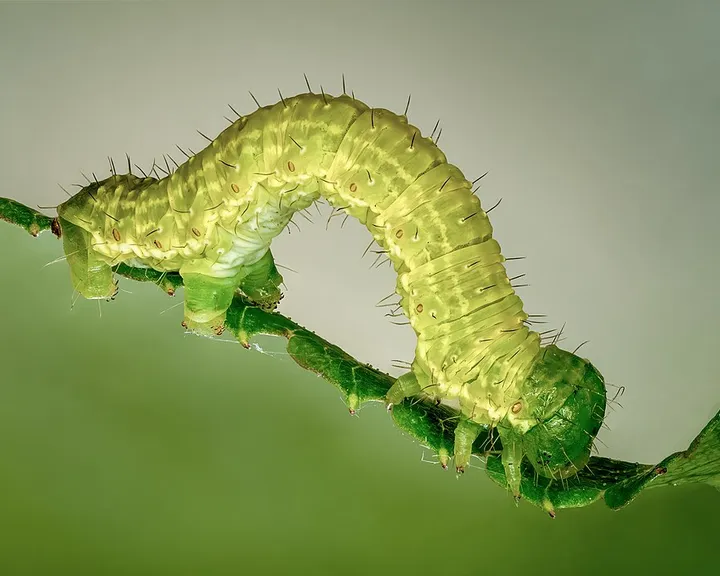
Foto: Ermell, CC BY-SA 4.0 – Lizenzangaben im BildnachweisnachtaktivKleiner Frostspanner
SchädlingeFalter, der im Spätherbst fliegt. Die Weibchen können nicht fliegen und klettern die Obstbäume hinauf.
-
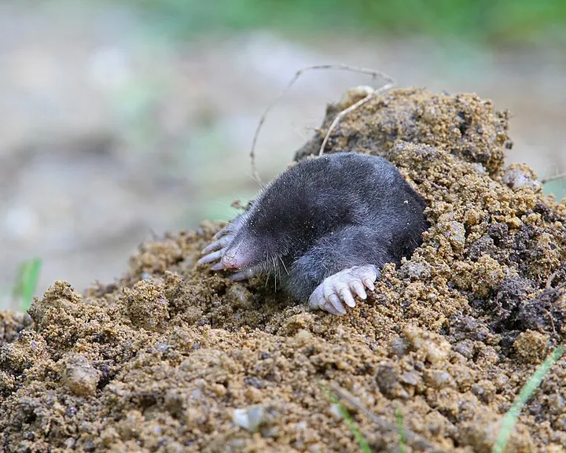
Foto: Christoph Moning, CC BY 4.0 – Lizenzangaben im BildnachweistagaktivnachtaktivMaulwurf
SäugetiereSamtschwarzer Gräber mit Schaufelhänden. Seine runden Hügel zeigen einen gesunden, wurmreichen Boden.
-
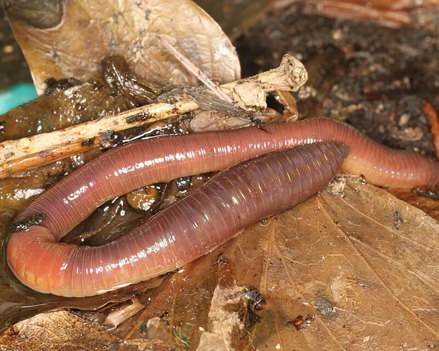
Foto: Donald Hobern, CC BY 2.0 – Lizenzangaben im BildnachweisnachtaktivRegenwurm
NützlingeDer wichtigste Gärtner unter der Erde: Er zieht Laub in seine Gänge und macht daraus fruchtbaren Humus.
-
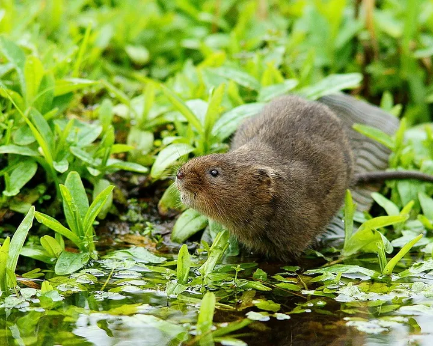
Foto: Peter Trimming, CC BY 2.0 – Lizenzangaben im BildnachweistagaktivnachtaktivSchermaus
SäugetiereDie „Wühlmaus“ des Gartens: Sie frisst Wurzeln, Möhren und Tulpenzwiebeln und hinterlässt flache Erdhügel.
Außerdem unterwegs
-
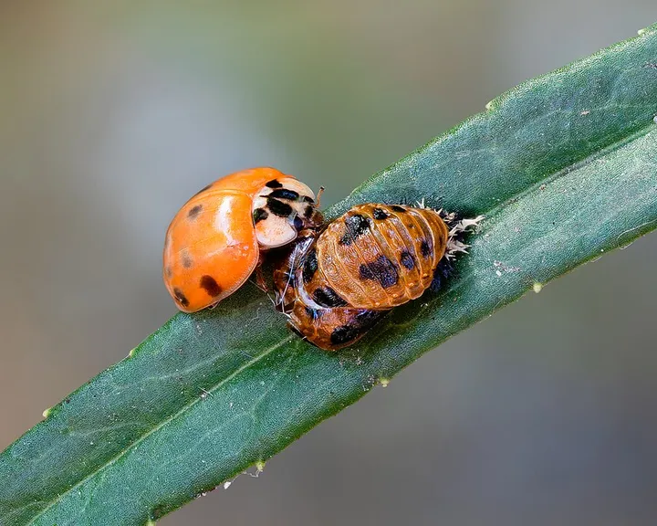
Foto: Ermell, CC BY-SA 4.0 – Lizenzangaben im BildnachweistagaktivAsiatischer Marienkäfer
NützlingeEingeschleppter Marienkäfer mit wechselndem Kleid: gelb, orange oder schwarz, mit null bis neunzehn Punkten.
-
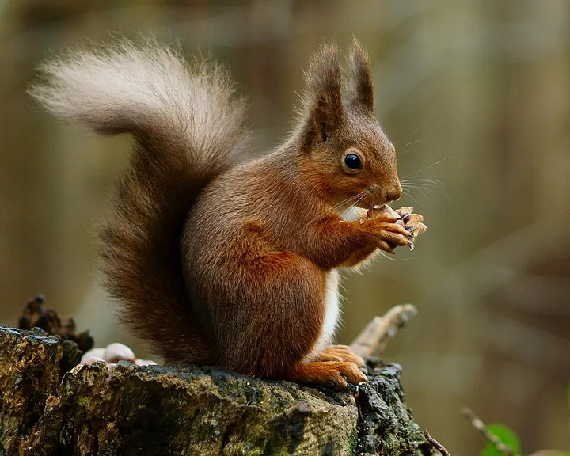
Foto: Peter Trimming, CC BY 2.0 – Lizenzangaben im BildnachweistagaktivEichhörnchen
SäugetiereFlinker Kletterer mit buschigem Schwanz, der im Herbst Nüsse für den Winter vergräbt.
-
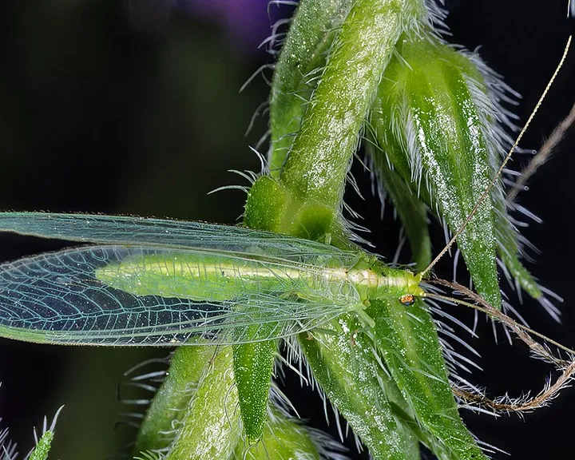
Foto: Didier Descouens, CC BY-SA 4.0 – Lizenzangaben im BildnachweisnachtaktivFlorfliege
NützlingeZartes, hellgrünes Insekt mit goldenen Augen und durchsichtigen Flügeln, das nachts ans Licht fliegt.
-
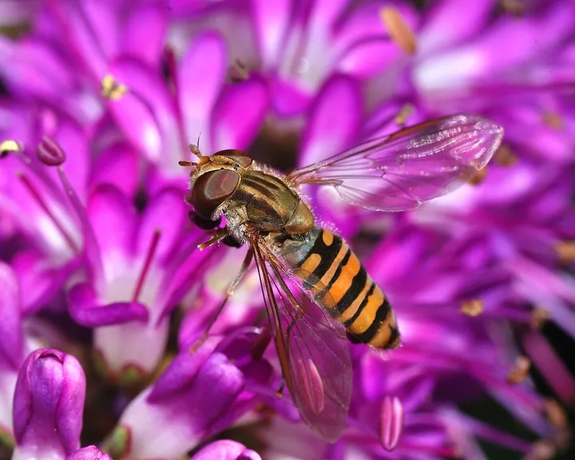
Foto: Alvesgaspar, CC BY-SA 3.0 – Lizenzangaben im BildnachweistagaktivHainschwebfliege
NützlingeGelb-schwarz gebänderte Fliege, die wie festgenagelt in der Luft steht. Harmlos, denn sie kann nicht stechen.
-
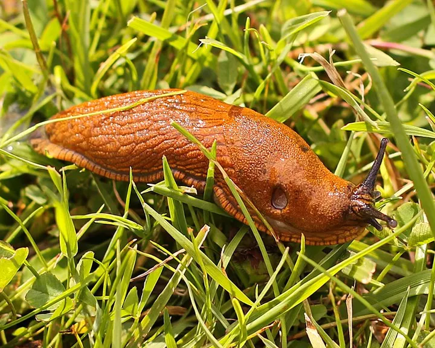
Foto: Kora27, CC BY-SA 4.0 – Lizenzangaben im BildnachweisnachtaktivSpanische Wegschnecke
SchädlingeDie häufigste Nacktschnecke im Gemüsebeet: einfarbig orange bis rotbraun und nach Regen in Massen unterwegs.
-
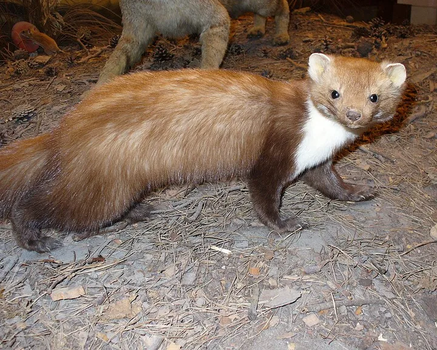
Foto: Franco Atirador, CC BY-SA 3.0 – Lizenzangaben im BildnachweisnachtaktivSteinmarder
SäugetiereDer Marder der Siedlungen: lebt gern in Scheunen und auf Dachböden und ist nachts unterwegs.
-
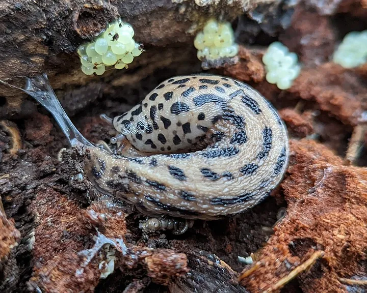
Foto: Matt Muir, CC BY-SA 4.0 – Lizenzangaben im BildnachweisnachtaktivTigerschnegel
NützlingeGroße, getigerte Nacktschnecke, die vor allem Welkes frisst und Gelege anderer Schnecken vertilgt.
-
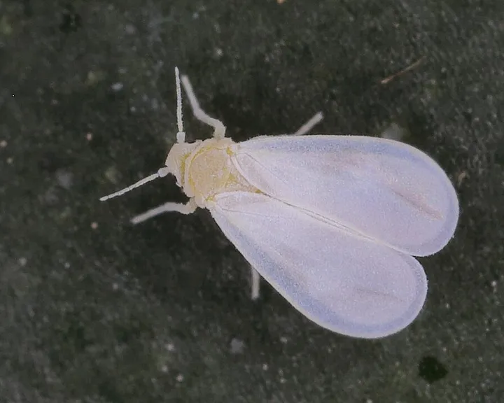
Foto: Dr. Guido Bohne, CC BY-SA 4.0 – Lizenzangaben im BildnachweistagaktivWeiße Fliege
SchädlingeWinzige weiße Insekten, die wie eine Wolke auffliegen, sobald man die Pflanze berührt.
Passend zum November
- Beispielfoto · Foto: 14GTR, CC BY-SA 4.0 – Lizenzangaben im Bildnachweis
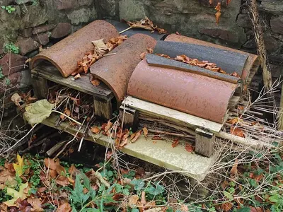
Unser TippIgelhaus, winterfest
Auswahl bei Amazon
Ein Unterschlupf für Winterschlaf und Kinderstube. Unter Hecke oder Laub an einen ruhigen Platz stellen.
Bei Amazon ansehen Igelhaus, winterfest (Werbelink, öffnet in neuem Fenster) Ratgeber: Schnecken ohne Gift - Beispielfoto · Foto: Hustvedt, CC BY-SA 3.0 – Lizenzangaben im Bildnachweis
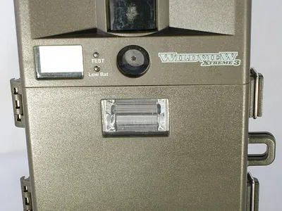
Unser TippWildkamera für den Garten
Auswahl bei Amazon
Zeigt dir, wer nachts unterwegs ist: Igel, Marder, Fuchs oder Eichhörnchen. Achte auf unsichtbares Infrarot (No-Glow).
Bei Amazon ansehen Wildkamera für den Garten (Werbelink, öffnet in neuem Fenster)
Werbelink: Wenn du über diesen Link etwas kaufst, erhält der Gartentierkompass eine kleine Provision von Amazon. Für dich ändert sich am Preis nichts. Als Amazon-Partner verdiene ich an qualifizierten Verkäufen.